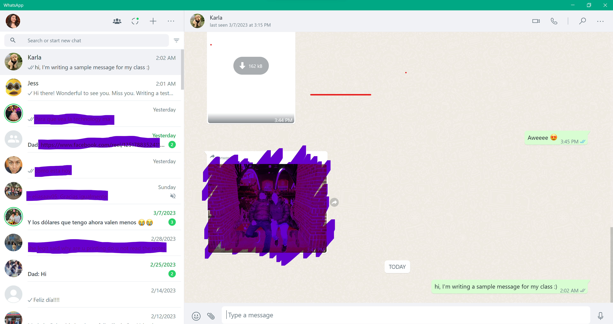
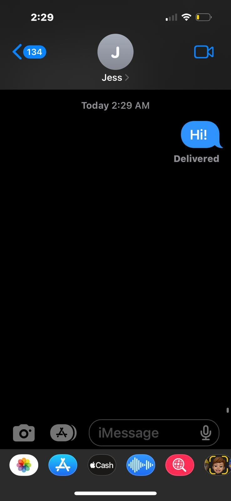

Assignment 5
Directions:
Pick 3 instant messaging UIs. Compare these UIs in the three usability dimensions (Learnability, Efficiency, Safety) and graphic design.
Whatsapp:
Sample text message:

Whatsapp is a popular instant messaging app with a large following worldwide, but a significantly more minute following in the United States. In the picture above, I've shown what Whatsapp's web application interface looks like. The UI is simple, modern, and doesn't take away from the purpose of the app; to send messages.
Learnability:
In terms of learnability, whatsapp is extremely easy to use. Its texting features are all within proximity. This strategic proximity allows users to explore all the app's features. The video call and phone call features are also grouped. The messages are all on the left and visible at all times. Overall, this platform allows learning its interface very easy for new users.
Efficiency:
Adding on, Whatsapp is extremely efficient. It works perfectly in both desktops(like the screenshot shows) as well as phones. It shows when users are online as well as the exact time they were last active. The active feature is extremely accurate. It shows when a message was delivered, read, and when it wasn't received.
Safety:
Whatsapp is extremely safe, since it uses end to end encryption, meaning only the person sending the message and the person receiving the message have access to their texts. It's absolute privacy. You also need two factor authentication to log into whatsapp.
Graphic Design:
Whatsapp has very minimalist graphic design, with a beige background for texts that can be costumized to be an image, a pre-set background offered by Whatsapp, or a color picked by the user. This allows complete control over how the app looks to the user. One feature to note is its ability to show IOS emojis even in non-IOS devices(including non-iphones and non-Mac desktops).Lastly, users can pick a profile picture.
Whatsapp rating: EXCELLENT!!!
Slack:
Sample text message:
Slack is a messaging app used by professionals and students, usually with the intent of not having to send phone text messages.
Learnability:
Slack is not easy to learn by any means. There is such an over-abundance of features that they may confuse users. Its interface isn't very beginner friendly and it's hard adjusting to what the features are and do. This interface is also custumizable like Whatsapp!
Efficiency:
Slack is amazing for group collaboration. It's interface allows users to send not only messages, but pdfs and other large attachments as well.
Safety:
Slack is very safe. It uses encryption like Whatsapp to protect user's privacy and conversations. Slack uses two factor authentication.
Graphic Design:
Since users can customize their slacks, Slack gives people the chance to opt in for their preffered design. Users can also pick a profile picture.
Slack rating: Good
iMessage:
Sample text message:
v
Learnability:
It's quite easy and almost second nature for most people who've been using IOS products for a while. Unlike a lot of Apple's other more complex features, their messaging app is actually very learnable.
Efficiency:
Safety:
Graphic Design:
iMessage rating: Great!.